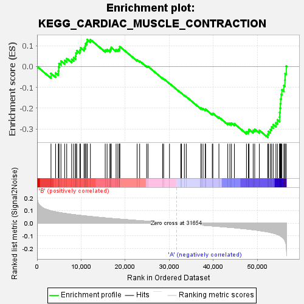

| | | Dataset | my.my.cls#B_versus_A.my.cls#B_versus_A_repos |
| Phenotype | my.cls#B_versus_A_repos |
| Upregulated in class | A |
| GeneSet | KEGG_CARDIAC_MUSCLE_CONTRACTION |
| Enrichment Score (ES) | -0.34046504 |
| Normalized Enrichment Score (NES) | -1.2890731 |
| Nominal p-value | 0.16046967 |
| FDR q-value | 0.61533105 |
| FWER p-Value | 0.941 |
Table: GSEA Results Summary

Fig 1: Enrichment plot: KEGG_CARDIAC_MUSCLE_CONTRACTION
Profile of the Running ES Score & Positions of GeneSet Members on the Rank Ordered List
| SYMBOL | TITLE | RANK IN GENE LIST | RANK METRIC SCORE | RUNNING ES | CORE ENRICHMENT | | 1 | COX7A1 | na | 3157 | 0.099 | -0.0330 | No |
| 2 | CACNG5 | na | 4203 | 0.091 | -0.0306 | No |
| 3 | FXYD2 | na | 4831 | 0.087 | -0.0219 | No |
| 4 | CACNG4 | na | 4896 | 0.086 | -0.0032 | No |
| 5 | MYH7 | na | 4971 | 0.086 | 0.0151 | No |
| 6 | ATP1B2 | na | 5413 | 0.083 | 0.0264 | No |
| 7 | ATP1B3 | na | 6254 | 0.079 | 0.0296 | No |
| 8 | SLC8A1 | na | 6724 | 0.076 | 0.0387 | No |
| 9 | CACNG7 | na | 7844 | 0.071 | 0.0352 | No |
| 10 | MYL2 | na | 8302 | 0.069 | 0.0429 | No |
| 11 | TPM2 | na | 8716 | 0.067 | 0.0510 | No |
| 12 | CACNA2D1 | na | 8796 | 0.067 | 0.0649 | No |
| 13 | COX6A2 | na | 8997 | 0.066 | 0.0765 | No |
| 14 | CACNB4 | na | 9690 | 0.063 | 0.0787 | No |
| 15 | CACNA2D2 | na | 9847 | 0.062 | 0.0903 | No |
| 16 | TPM4 | na | 10653 | 0.059 | 0.0896 | No |
| 17 | CACNA1C | na | 10900 | 0.058 | 0.0986 | No |
| 18 | TNNI3 | na | 10981 | 0.058 | 0.1105 | No |
| 19 | CACNA1D | na | 11304 | 0.057 | 0.1179 | No |
| 20 | ATP1A2 | na | 11369 | 0.057 | 0.1298 | No |
| 21 | MYH6 | na | 12095 | 0.054 | 0.1293 | No |
| 22 | COX4I2 | na | 15457 | 0.043 | 0.0796 | No |
| 23 | CACNB2 | na | 15882 | 0.041 | 0.0816 | No |
| 24 | TPM1 | na | 16524 | 0.039 | 0.0793 | No |
| 25 | CACNB3 | na | 16679 | 0.039 | 0.0855 | No |
| 26 | CACNA2D3 | na | 16821 | 0.038 | 0.0918 | No |
| 27 | CACNA1F | na | 17927 | 0.035 | 0.0804 | No |
| 28 | UQCRC2 | na | 18334 | 0.034 | 0.0810 | No |
| 29 | CACNG1 | na | 18657 | 0.033 | 0.0830 | No |
| 30 | SLC9A6 | na | 18745 | 0.033 | 0.0890 | No |
| 31 | ATP1A1 | na | 18754 | 0.033 | 0.0964 | No |
| 32 | ATP1B4 | na | 22689 | 0.022 | 0.0319 | No |
| 33 | COX8C | na | 23271 | 0.021 | 0.0265 | No |
| 34 | RYR2 | na | 24860 | 0.017 | 0.0022 | No |
| 35 | COX6B1 | na | 25174 | 0.016 | 0.0004 | No |
| 36 | ATP1A4 | na | 28490 | 0.008 | -0.0565 | No |
| 37 | COX7B | na | 28711 | 0.007 | -0.0587 | No |
| 38 | TNNT2 | na | 30039 | 0.004 | -0.0813 | No |
| 39 | CACNA1S | na | 32612 | -0.002 | -0.1262 | No |
| 40 | ACTC1 | na | 32757 | -0.003 | -0.1282 | No |
| 41 | COX7A2L | na | 33418 | -0.004 | -0.1388 | No |
| 42 | UQCR10 | na | 33842 | -0.005 | -0.1451 | No |
| 43 | MYL3 | na | 37181 | -0.014 | -0.2010 | No |
| 44 | COX6B2 | na | 37235 | -0.014 | -0.1987 | No |
| 45 | MT-CO3 | na | 37650 | -0.015 | -0.2026 | No |
| 46 | CACNG6 | na | 38151 | -0.016 | -0.2076 | No |
| 47 | COX5B | na | 38231 | -0.017 | -0.2052 | No |
| 48 | COX6A1 | na | 39752 | -0.021 | -0.2274 | No |
| 49 | TPM3 | na | 39878 | -0.021 | -0.2248 | No |
| 50 | COX6CP3 | na | 41252 | -0.025 | -0.2434 | No |
| 51 | UQCRFS1 | na | 43262 | -0.031 | -0.2718 | No |
| 52 | CACNG2 | na | 43743 | -0.032 | -0.2729 | No |
| 53 | ATP1A3 | na | 44100 | -0.033 | -0.2716 | No |
| 54 | CACNA2D4 | na | 44758 | -0.035 | -0.2751 | No |
| 55 | ATP2A2 | na | 47502 | -0.045 | -0.3133 | No |
| 56 | CACNG3 | na | 47945 | -0.047 | -0.3105 | No |
| 57 | MT-CO2 | na | 48088 | -0.047 | -0.3022 | No |
| 58 | UQCR11 | na | 49025 | -0.051 | -0.3070 | No |
| 59 | MT-CYB | na | 49371 | -0.052 | -0.3011 | No |
| 60 | COX8A | na | 50424 | -0.057 | -0.3066 | No |
| 61 | COX4I1 | na | 52342 | -0.068 | -0.3248 | Yes |
| 62 | UQCRC1 | na | 52499 | -0.069 | -0.3117 | Yes |
| 63 | MT-CO1 | na | 52905 | -0.072 | -0.3022 | Yes |
| 64 | COX7B2 | na | 53203 | -0.075 | -0.2903 | Yes |
| 65 | COX7A2 | na | 53565 | -0.078 | -0.2788 | Yes |
| 66 | CACNB1 | na | 54190 | -0.084 | -0.2706 | Yes |
| 67 | UQCRQ | na | 54521 | -0.089 | -0.2560 | Yes |
| 68 | COX7C | na | 55013 | -0.097 | -0.2425 | Yes |
| 69 | UQCRHL | na | 55038 | -0.097 | -0.2206 | Yes |
| 70 | CACNG8 | na | 55142 | -0.099 | -0.1997 | Yes |
| 71 | UQCRB | na | 55200 | -0.100 | -0.1778 | Yes |
| 72 | COX6C | na | 55260 | -0.101 | -0.1555 | Yes |
| 73 | COX5A | na | 55370 | -0.104 | -0.1336 | Yes |
| 74 | CYC1 | na | 55539 | -0.108 | -0.1119 | Yes |
| 75 | TNNC1 | na | 55984 | -0.122 | -0.0917 | Yes |
| 76 | UQCRH | na | 56222 | -0.135 | -0.0650 | Yes |
| 77 | ATP1B1 | na | 56263 | -0.137 | -0.0341 | Yes |
| 78 | SLC9A1 | na | 56537 | -0.176 | 0.0015 | Yes |
Table: GSEA details [plain text format]
Fig 2: KEGG_CARDIAC_MUSCLE_CONTRACTION
Blue-Pink O' Gram in the Space of the Analyzed GeneSet
Fig 3: KEGG_CARDIAC_MUSCLE_CONTRACTION: Random ES distribution
Gene set null distribution of ES for KEGG_CARDIAC_MUSCLE_CONTRACTION